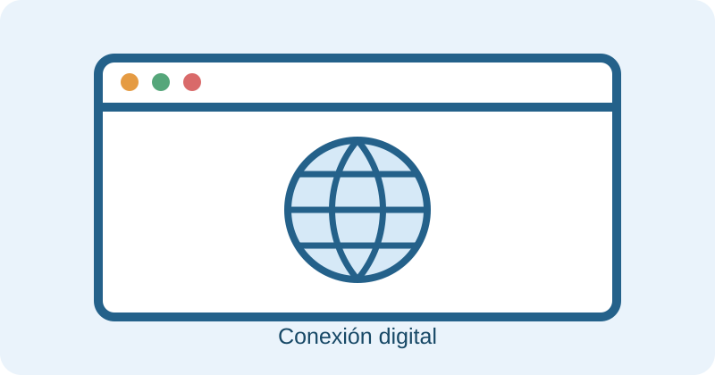

En la sociedad
Ayudan a mantenernos comunicados, acceder a recursos educativos y realizar tramites sin desplazarnos.
Su influencia en la sociedad y los negocios

Las tecnologias web permiten crear y utilizar sitios y aplicaciones a traves de Internet. Actualmente forman parte de actividades cotidianas como estudiar, comunicarnos, buscar informacion, realizar compras y trabajar.
Ayudan a mantenernos comunicados, acceder a recursos educativos y realizar tramites sin desplazarnos.
Permiten que los emprendimientos presenten sus productos, atiendan a sus clientes y reciban pedidos mediante canales digitales.
| Ambito | Uso | Beneficio |
|---|---|---|
| Educacion | Aulas virtuales | Aprender desde diferentes lugares |
| Comercio | Tiendas en linea | Comprar y vender por Internet |
| Comunicacion | Mensajeria y videollamadas | Contacto rapido a distancia |
Este formulario es una muestra academica.